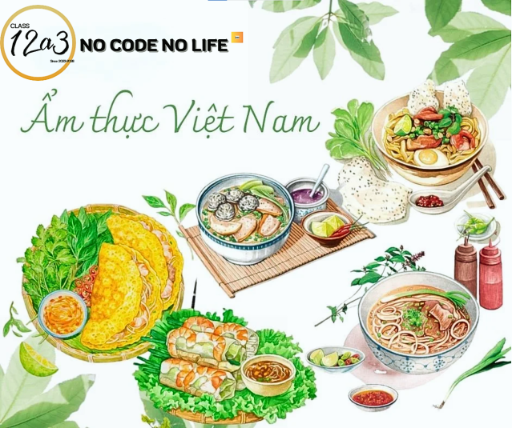
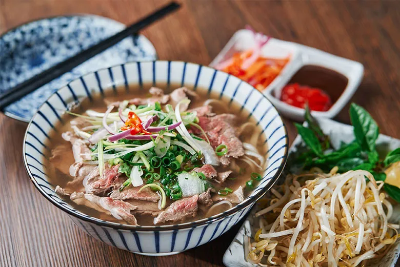
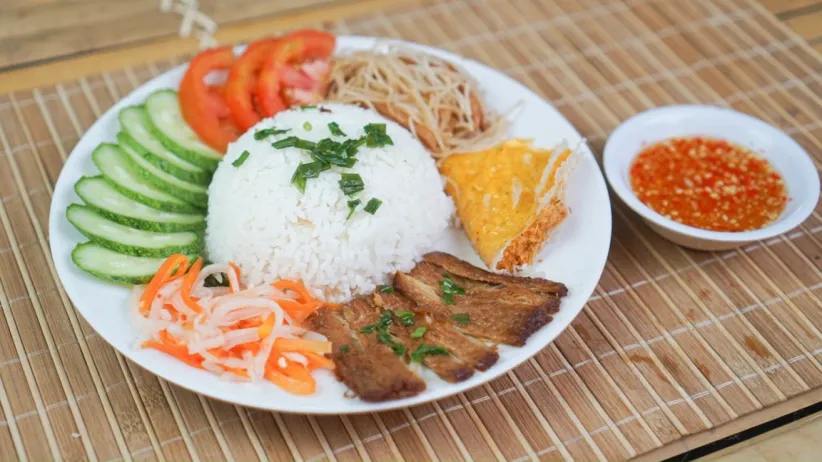
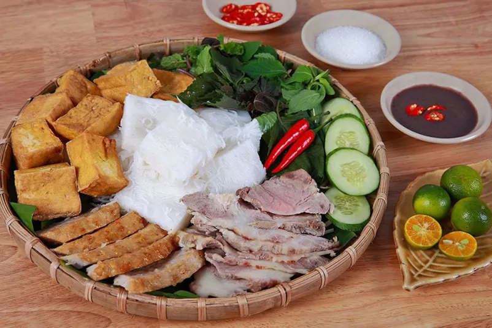
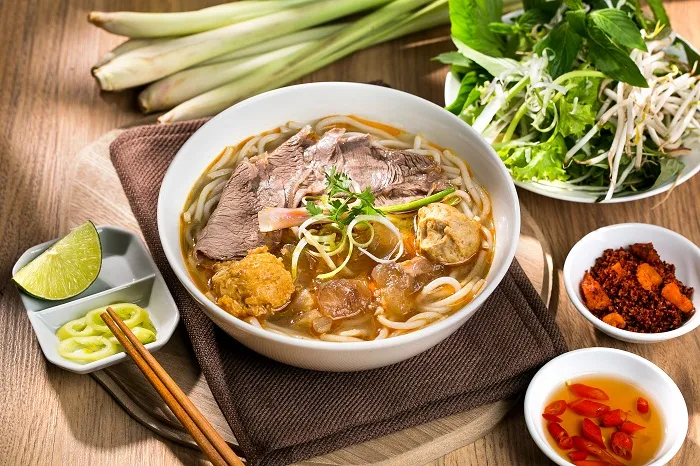
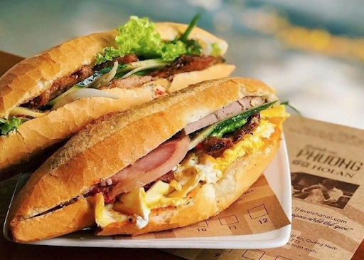
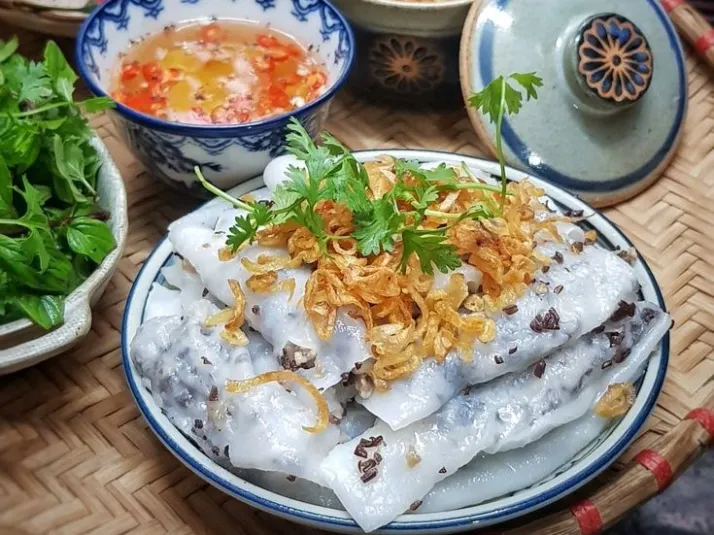

Lời Giới Thiệu
Chúng tôi là Học sinh lớp 12A3 cùng mới đam mê ăn uống, một nhóm những người trẻ cùng chung sở thích khám phá món ngon và chia sẻ hương vị Việt Nam theo cách giản dị nhất. Nhóm được lập ra vì muốn góp phần lưu giữ những món ăn quen thuộc, giới thiệu thêm những món mới lạ và kể lại những câu chuyện thú vị phía sau từng hương vị.
Mọi nội dung trên trang – từ hình ảnh, bài viết đến những gợi ý món ăn – đều được tụi mình làm bằng sự yêu thích ẩm thực Việt và mong muốn mang lại cho bạn một góc nhìn gần gũi, dễ hiểu và dễ cảm nhận. Tụi mình hy vọng trang web sẽ giúp bạn tìm thấy thêm nhiều món ngon, hiểu hơn về văn hóa ẩm thực và có cảm hứng thử nấu hoặc thưởng thức những hương vị đặc trưng của Việt Nam.
TOP 6 MÓN ĂN ĐẶC SẢN PHỔ BIẾN TRÊN KHẮP BA MIỀN TỔ QUỐC VIỆT NAM
Ẩm thực Việt Nam nổi bật nhờ sự hài hòa tinh tế giữa nhiều tầng hương vị. Các món ăn đặc sản thường kết hợp khéo léo vị mặn – ngọt – chua – cay – béo – thanh, tạo nên cảm giác cân bằng dễ chịu nhưng vẫn đủ chiều sâu để gây ấn tượng. Từ những món nước mang vị ngọt thanh và thơm mùi nước dùng hầm từ xương, đến các món cuốn tươi mát với rau thơm, hay những món kho đậm đà thấm vị nước mắm, tất cả đều thể hiện sự tinh tế trong cách nêm nếm.
Nhờ sự kết hợp hài hòa đó, món ăn Việt Nam không chỉ ngon miệng mà còn mang lại cảm giác nhẹ nhàng, gần gũi và đậm chất truyền thống. Hôm nay tôi sẽ cùng mọi người cùng xem qua sáu món ăn đặc sản của nước Việt Nam ta.
1. Phở Bò Hà Nội
Phở là món ăn truyền thống nổi tiếng nhất của Việt Nam, đặc trưng bởi nước dùng thơm, bánh phở dai và thịt bò mềm mại. Phở có mặt ở nhiều nơi món ăn quốc dân của Việt Nam, đã trở nên nổi tiếng trên toàn thế giới và được mọi người ưa thích với sự tinh tế và nhẹ nhàng trong cách chế biến. Từng miếng thịt mềm mại, nước dùng đậm đà và hương vị phong phú của gia vị đã làm say đắm biết bao thực khách.
Cơm tấm là món ăn đặc trưng của miền Nam, đặc biệt phổ biến ở Sài Gòn. Món ăn có hương vị nổi bật ở sự đậm đà, thơm béo, hòa quyện giữa thịt nướng, mỡ hành, đồ chua và nước mắm, tạo nên món ăn bình dân nhưng giàu bản sắc. Với hương vị đậm đà và sự kết hợp tinh tế từ những nguyên liệu quen thuộc, món cơm tấm đã chinh phục biết bao thực khách, từ người dân địa phương đến du khách quốc tế.
Bún đậu mắm tôm là món ăn dân gian nổi tiếng của miền Bắc, đặc biệt phổ biến ở Hà Nội.Đây là món thường được dùng như bữa ăn nhẹ, ăn chơi, đôi khi là bữa tối chính. Món gồm bún lá, đậu phụ rán vàng giòn, ăn kèm thịt luộc, chả cốm và các loại rau. Điểm nhấn nằm ở mắm tôm – được pha với tắc, đường, ớt và dầu nóng tạo hương vị mặn – thơm – đậm đà. Món ăn có hương vị mạnh nhưng hài hòa, mang đậm nét ẩm thực truyền thống Việt.
Bún bò Huế là món đặc sản nổi tiếng của miền Trung, đặc biệt là cố đô Huế. Món ăn vang danh ba miền và trên khắp thế giới bởi hương vị đặc trưng của mảnh đất cố đô.Món ăn gây ấn tượng bởi hương vị bún bò Huế đậm đà, thơm cay, đại diện cho tính cách mạnh mẽ, mộc mạc của ẩm thực miền Trung.
Bánh mì Việt Nam là món ăn đường phố nổi tiếng, Bánh mì được xem là biểu tượng ẩm thực Việt bởi sự linh hoạt, dễ ăn và phù hợp mọi bữa trong ngày. Bánh mì là một biểu tượng ẩm thực Việt Nam, thể hiện sự giao thoa văn hóa và tính sáng tạo của người Việt trong việc biến tấu món ăn.
Bánh cuốn là món ăn truyền thống nổi tiếng của miền Bắc, đặc biệt phổ biến ở Hà Nội, Hải Dương và Nam Định. Món nổi tiếng với lớp bánh mỏng làm từ bột gạo hấp, bên trong cuốn nhân thịt băm – mộc nhĩ, ăn kèm chả và nước mắm pha. Bánh có hương vị thanh, mềm, thơm, nổi bật bởi lớp bánh mỏng mịn, nhân đậm đà và hành phi vàng giòn rắc lên trên. Với sự sáng tạo trong cách chế biến , bánh cuốn đã trở thành món ăn hấp dẫn không chỉ ở Việt Nam mà còn với du khách nước ngoài.
